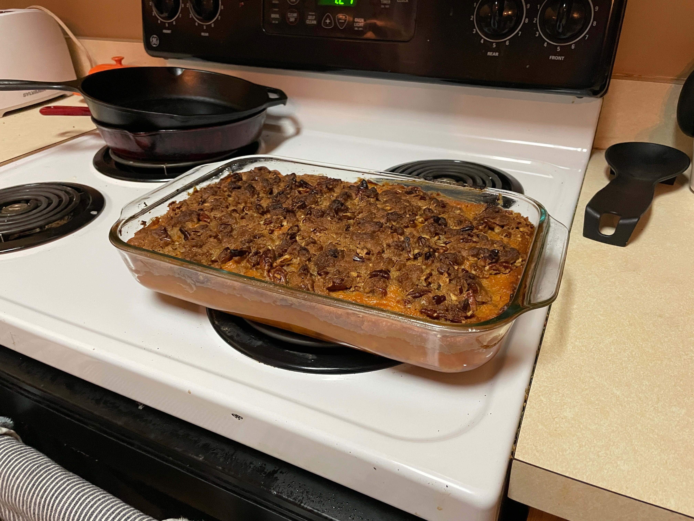

Sweet Potato Casserole

Description
A crowd pleasing sweet potato casserole. Delicious any time of day, but most popular for Thanksgiving dinners.
Ingredients
- 5-6 medium/large sweet potatoes
- 1 14oz can sweetened condensed milk
- 1 tsp cinnamon
- 1 tsp vanilla extract (DO NOT USE IMITATION)
- 2 large eggs
- 1.5 hearty cups sugar
- 0.75 sticks unsalted butter
- 1 cup brown sugar
- 0.5 cups flour
- 1.25 sticks salted butter
Steps
Total Time: ~2.5 hours (mostly hands off bake time)
- Sweet Potato Base: Remove skins from the sweet potatoes (eat or discard).
- In large mixing bowl, combine sweet potatoes, 1 can sweetened condensed milk, 1 tsp cinnamon, 1 tsp vanilla extract, 2 large egg, 1.5 hearty cups sugar, 0.75 sticks of melted unsalted butter.
- Mix or blend these ingredients to attain a smooth consistency. Once blended, transfer the base into the pre-greased 13x9inch glass pan.
- Make topping: In a large bowl, combine 1 cup chopped walnuts/pecans, 1 cup brown sugar, 0.5 cups flour, 1.25 sticks melted salted butter. Stir together until the mixture is goopy. Add additional flour and brown sugar in a 1:2 ratio as needed.
- Spread topping over the sweet potato base. Try to spread as you pour from the bowl as it does not spread well once on the base.
- Bake until topping is browned and achieves slight caramelization :).
Additional Notes:
Ingredient Quality
Preference toward organic ingredients. Eagle Brand or equivalent quality sweetened condensed milk. Kerrygold butter.
Milk Allergy and Substitute
Mix all ingredients below and use as a substitute for sweetened condensed milk in recipes for pies, bars and desserts. Avoids milk.
- 2 eggs
- 1 c. brown sugar
- 1 tsp. vanilla
- 2 tbsp. flour
- 1/2 tsp. baking powder
- 1/4 tsp. salt